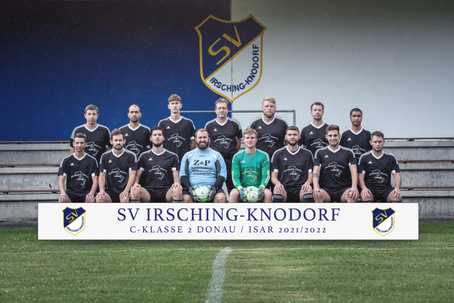

Willkommen in der Abteilung Fußball des SV Irsching-Knodorf!
Unser Verein nimmt mit zwei Seniorenmannschaften in der Punktrunde des Spielkreises Donau/Isar teil.
Beide Mannschaften trainieren gemeinsam jeden Dienstag und Donnerstag Abend.
SV Irsching-Knodorf
Hier geht es zum SV Irsching-Knodorf beim bayrischen Fußball-Verband!Trainer: Fatih Soysal (Tel.: 0151/54929739)
Co-Trainer: Manuel Graswald (Tel.: 0152/22833012)
(v.l.n.r) Simon Lautner; Leo Baal; Joachim Schuffert; Marcus Brunnhuber; Tobias Bauer; Nikolas Nest; Abd Algolf Ibrahim; Manuel Brunnhuber (Abt. Leiter Fussball) (reihe unten) Sebastian Rauch; Johann Leppmeier; Melih Soysal; Dominik Thaller; Thomas Popp; Thomas; Hasler; Fatih Soysal (Trainer); Philipp Lederer; Roland Lubej (n.a.d.B.) Christoph Härdl; Dawid Hain
SV Irsching-Knodorf II
(v.l.n.r) Benjamin Ehrl; Safiulla Amiri; Tobias Schmelzer; Sigfried Putterer; Patrick Nüske; Andreas Schleibinger; Ahmed Yaqoobi (reihe unten) Alexander See; Thomas Amann; Johann Noll; Dominik Thaller; Thomas Hasler; Manuel Brunnhuber; Marco Mayerhofer; Enrico Beis (n.a.d.B.) Stasch Erich, Kolbe Matthias, Andreas Amann; Daniel Nest; Braun Josef;